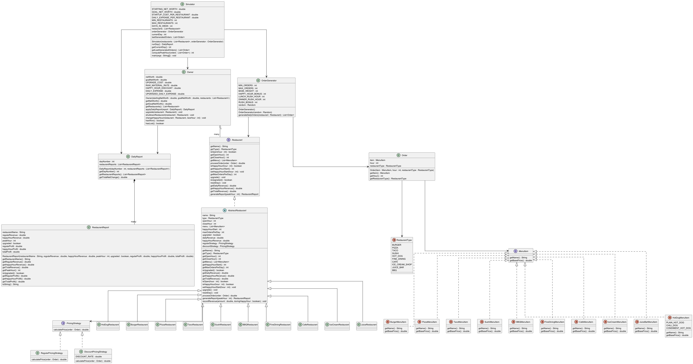

Hi, I’m Rodrigo, a Computer Science student at the University of San Diego. I originally grew up in Santiago, Chile, and later moved to the United States, where I’ve continued my education and developed my interest in technology.
I’m currently studying computer science with a focus on building practical, real-world projects. Through my coursework, I’ve worked with Java, data structures, and problem-solving techniques, and I enjoy understanding how systems work behind the scenes. I’m especially interested in areas like data science and cybersecurity, and I’m always looking to improve my technical skills through hands-on experience.
Outside of academics, I enjoy reading, playing the piano and guitar, and spending time playing video games. I also value spending time with my family.
Projects
Birthday Paradox Simulator
The birthday paradox is the idea that you don’t need a huge group of people for two of them to share a birthday. Even though there are 365 possible birthdays, the probability of a match becomes more than 50% once the group size reaches 23. This project explores that result using a simulation.
The motivation behind this project was to take a famous probability result and make it tangible by running experiments in code. We can generate random birthdays, repeat the experiment many times, and watch the percentages increase as the number of people grows.
Functionally, the program runs experiments for group sizes from 5 up to 100 (in increments of 5). For each group size, it runs 20 trials and reports the percentage of trials where at least two people share the same birthday. The output is printed as a simple table showing the number of people and the matching-birthday percentage.
Project design is split into small classes with clear responsibilities. A Birthday object represents one person’s (month, day) birthday, generated randomly but always valid (no February 30th). A Trial represents one “room” of people and stores a list of birthdays. An Experiment runs multiple trials for a fixed group size and computes the overall percentage of duplicate birthdays. Finally, Simulator is the driver that loops through group sizes and prints results.
My main contribution was implementing the Trial class. I built the logic that checks whether a trial contains any duplicate birthday by comparing each birthday against the others (month and day). This part is the “detector” for the whole project, every experiment’s final percentage depends on whether each trial correctly identifies a match. I also helped a bit with other parts of the project as we worked through integration and debugging.

Elevator Simulator
This project is a simulation of a multi-elevator system in a building. The goal was to design and implement a system where different types of elevators work together to efficiently service requests while following specific constraints.
The simulator supports multiple elevator types, including standard, freight, penthouse, and express elevators. Each type follows its own rules for which calls it can accept and how it moves throughout the building.
A scheduler is responsible for assigning calls to elevators. Two strategies were implemented: a simple scheduler that assigns calls from left to right, and a complex scheduler that selects the elevator that can service the request in the fewest simulation rounds.
The simulation runs step-by-step, where each round assigns at most one call and moves every elevator one floor. The program continues until all calls are completed and all elevators return to the ground floor.
This project emphasized object-oriented design principles, including abstraction, inheritance, encapsulation, and polymorphism. It also involved implementing test-driven development and working collaboratively using GitHub.
My main contribution to this project was implementing the scheduling logic and simulation system. I worked on both the simple and complex schedulers, as well as the simulator that drives the round-by-round execution and output of the system. This helped me better understand how different components interact in a larger object-oriented design.

Restaurant Management Simulator
This project is a simulation of a multi-restaurant management game. The goal was to design and implement a system where a player manages a portfolio of restaurants over a 7-day week, making strategic decisions to grow their net worth from $25,000 to $50,000.
The simulator supports 10 restaurant types, including burger, pizza, taco, sushi, hot dog, fine dining, cafe, ice cream, juice bar, and BBQ. Each restaurant has its own menu, operating hours, happy hour, and maximum daily order capacity. Some restaurants operate overnight, requiring special handling of wraparound scheduling logic.
An order generator simulates daily customer demand using a weighted random system that skews orders toward rush hours and happy hour. Each restaurant produces between 50 and 100 orders per day. The simulation runs day-by-day, processing revenue, raw material costs, happy hour discounts, and operating expenses. Between days, the player can upgrade restaurants, shut down underperforming ones, or adjust happy hour timing to maximize profit.
This project emphasized object-oriented design principles, including abstraction, inheritance, encapsulation, and polymorphism. It also incorporated the strategy design pattern for pricing, test-driven development, and collaborative development using GitHub.
My main contributions included implementing the Order model, creating all restaurant menu item enums, and writing the full test suites for RestaurantTest and OrderTest. These components ensured type-safe menu handling, reliable order processing, and strong test coverage across the system.